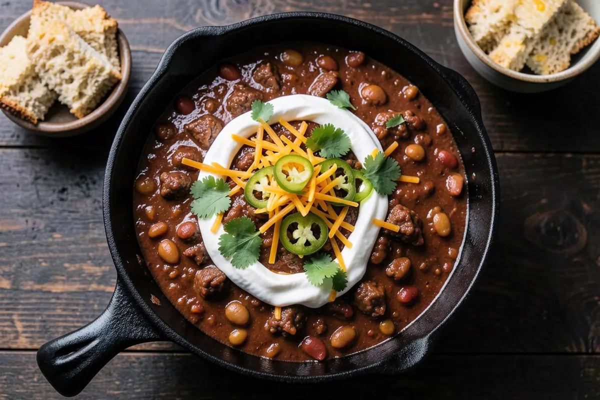

Batch Cooking for Weeknights Without Eating the Same Dinner

The reason batch cooking fails is that it produces four identical containers of the same stew. Cooking components instead gives you the same head start with none of the boredom.
Cook parts, not meals
A finished meal is a dead end. A pot of chili can only be chili. But a tray of roasted vegetables, a pot of grains, a batch of beans and a container of sauce can be assembled into a bowl, folded through pasta, stuffed into a pepper or eaten with eggs, and none of them feel like the same dinner twice.
This is how restaurant kitchens work, and it scales down to a home fridge without any special equipment. The components are chosen because they keep well and reheat without damage, which rules out most fried things and anything with a delicate sauce.
What holds up and what does not
Braises, stews, chili, soups and bean dishes improve overnight and keep for four days. Roasted root vegetables and squash hold well; roasted greens do not, and are better cooked fresh in ten minutes. Cooked grains keep for three days and freeze well if spread flat first.
Dressings, sauces and pickles are where the variety comes from, and they keep for a week or more. A jar of tahini dressing, a pot of yogurt with lemon and garlic, and something sharp and pickled will make the same base ingredients taste like three different dinners.
The test for a good component is whether it can be eaten three ways without complaint. Roasted squash works in a grain bowl, folded through pasta, and mashed onto toast with feta. A pot of lentils works as a soup, a side, and a sauce for sausages. A tray of roasted chicken thighs works hot, cold in a salad, and shredded into soup.
A one-hour Sunday session
Heat the oven to 425°F (220°C) and put two sheet pans in. On one, root vegetables and onions for roasting. On the other, a tray of chicken thighs or sausages, which will cook in the same time. While those roast, put a pot of grains on the hob and a pot of beans or a simple tomato sauce on the other ring.
That is four components in about an hour, most of it unattended, and it produces the base for four or five weeknight dinners. The washing up is the real work, and it is one session rather than five.
Fresh herbs and salad leaves are the exception to batching, because they are the components that go from crisp to slimy fastest. Wash and dry them properly, wrap them in a cloth or kitchen paper, and keep them in a box rather than a bag. A handful of something raw and green on top of a reheated bowl is what stops it tasting like a leftover.
Storing so it stays good
Cool everything quickly, in shallow containers, and get it into the fridge within a couple of hours. Keep components in separate containers rather than layering them into finished bowls, because they keep for different lengths of time and reheat at different rates.
Label with the date and the contents. A fridge full of unlabelled containers is a fridge full of mystery, and mystery food gets thrown away. One shelf for cooked components, one for raw, and a rule that nothing goes in without a date makes the whole system work.
Reheating without ruining texture
Reheat grains with a splash of water under a lid, or in a pan with a little oil, rather than in a dry microwave, which turns them hard at the edges. Roasted vegetables come back best in a hot oven for six to eight minutes; a microwave makes them limp and sweet.
Soups and stews reheat gently on the hob, and often need loosening with stock because they thicken when cold. Anything you plan to eat cold should be dressed at the last minute, since dressing on a grain bowl overnight turns the whole thing into one soft texture.
Portion before you store. A large container that gets reheated and re-refrigerated several times passes through the warm zone on each trip, and the food at the bottom of the pot takes longest to cool. Small containers cool faster and mean one container is one meal.
Keeping it from becoming a chore
Batch cooking goes wrong when it becomes a second job on a Sunday. An hour is enough, and doing it twice a week is often easier than one long session. The aim is to remove the decision from a Tuesday evening, not to fill the freezer.
Rotate the components rather than repeating them. If this week is grains, roasted roots and a tomato sauce, next week can be beans, a slaw and a yogurt dressing. The structure stays the same and the food does not, which is the whole point.
A week built from four components
With grains, roasted vegetables, a pot of beans and a sauce in the fridge, the week assembles itself. Monday is a bowl with everything in it. Tuesday is the beans warmed with the vegetables and spooned over toast. Wednesday is pasta with the vegetables and a spoonful of the sauce thinned with pasta water. Thursday is eggs with the grains and whatever greens are left.
None of those are the same dinner, and none of them take more than fifteen minutes on the night. The variety comes from the format rather than from new ingredients, which is also why the shopping list stays short.
Written by Kent B Williams for Hearth & Harvest. Questions or corrections are welcome at the contact page.